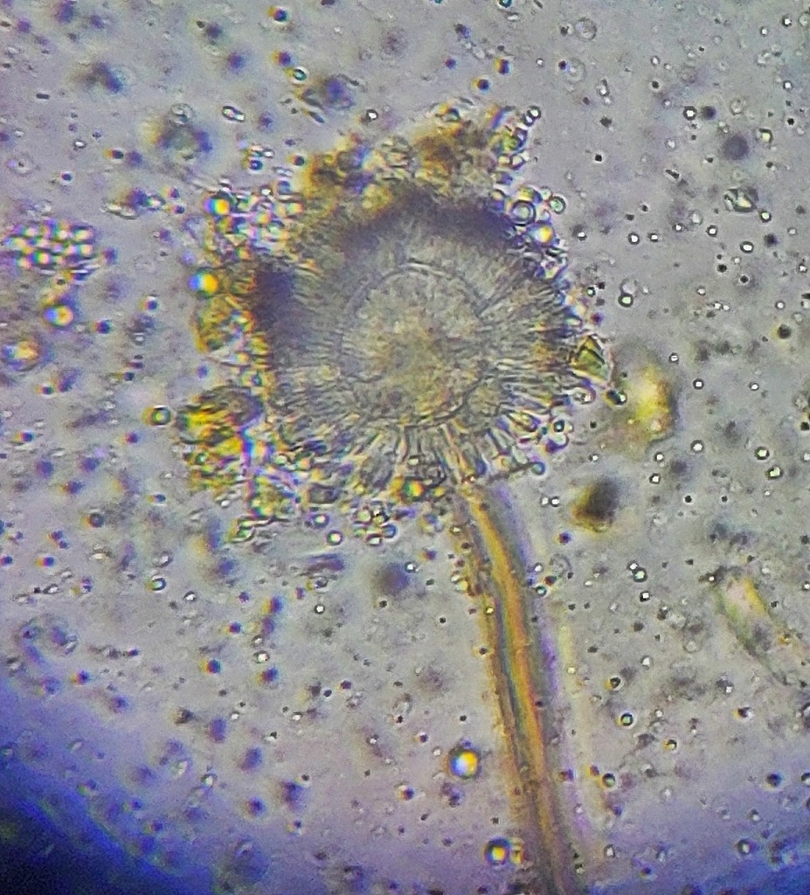

Toksisitas: Sangat Tinggi
INANG UTAMA
Aspergillus ochraceus
Kapang klasik penghasil OTA, umum ditemukan pada biji kopi yang disimpan dalam kondisi lembap dan hangat. Spesies ini dianggap sebagai produsen OTA paling signifikan dalam rantai pasok kopi global.